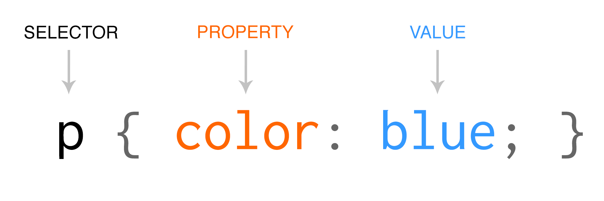

INTRODUCTION
WHAT IS CSS?CSS (Cascading Style Sheets) is a language designed to simplify the process of making web pages presentable.
It allows you to apply styles to HTML documents by prescribing colors, fonts, spacing, and positioning.
The main advantages are the separation of content (in HTML) and styling (in CSS) and the same CSS rules can be used across all pages and not have to be rewritten.
HTML uses tags and CSS uses rule sets.
CSS styles are applied to the HTML element using selectors.
WHY CSS?
1. Saves Time:Write CSS once and reuse it across multiple HTML pages.
2. Easy Maintenance: Change the style globally with a single modification.
3. Search Engine Friendly: Clean coding technique that improves readability for search engines.
4. Superior Styles: Offers a wider array of attributes compared to HTML.
5. Offline Browsing: CSS can store web applications locally using offline cache, allowing offline viewing.
CSS SYNTAX:
CSS consists of style rules that are interpreted by the browser and applied to the corresponding elements. A style rule set includes a selector and a declaration block.
Selector:Targets specific HTML elements to apply styles.
Declaration: Combination of a property and its corresponding value.

The selector points to the HTML element that you want to style.
The declaration block contains one or more declarations separated by semicolons.
Each declaration includes a CSS property name and a value, separated by a colon.
Example:

CSS declaration always ends with a semicolon, and declaration blocks are surrounded by curly braces. In this example, all paragraph element (p tag) will be centre-aligned, with a blue text color.
KEY ADVANTAGES AND DISADVANTAGES OF CSS:
Advantages of CSS:
Simplifies web design and maintenance.
Enhances website performance and user experience.
Supports responsive and adaptive designs for all devices.
Disadvantages of CSS:
Cross-Browser Compatibility Issues:Different browsers may interpret CSS differently, causing inconsistencies in design.
Complexity in Large Projects:As projects grow, CSS can become hard to manage, leading to cluttered code and style conflicts.
Limited Dynamic Behavior:CSS is mainly for static design, so it can’t handle complex interactions or animations without JavaScript
|